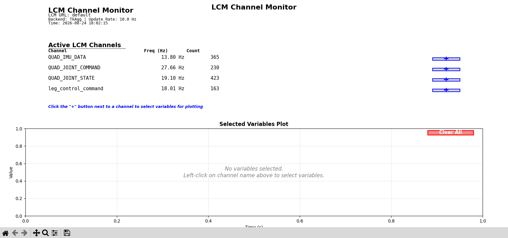
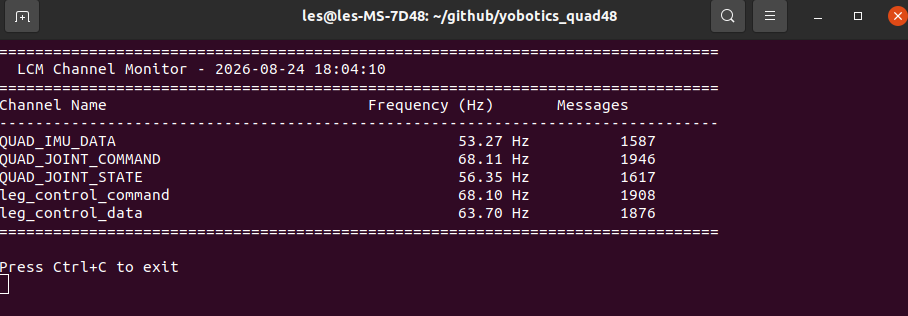
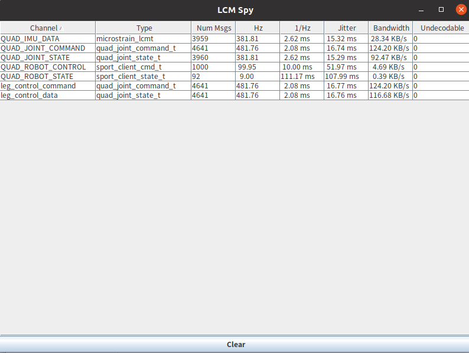
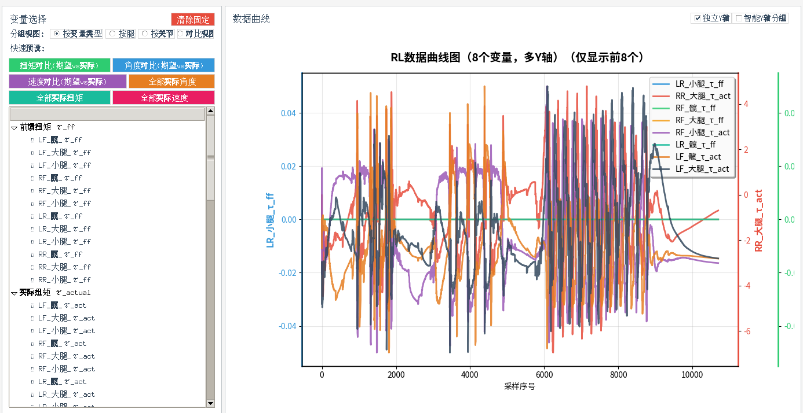

2.4 仿真调试¶
用途¶
本节说明 MuJoCo 仿真阶段常用的 LCM 监控、控制器日志、MuJoCo Viewer、CSV 数据和绘图工具。
LCM Monitor¶
查看所有通道和频率：
bash scripts/monitor_lcm.sh

无 GUI 环境使用文本模式：
bash scripts/monitor_lcm.sh --no-gui

指定 LCM URL：bash scripts/monitor_lcm.sh --lcm-url "udpm://239.255.76.67:7667?ttl=1"
也可以使用 LCM 官方工具：
bash scripts/launch_lcm_spy.sh

控制器日志¶
默认日志路径：
log/robot_log.txt
查看最近日志：
tail -n 80 log/robot_log.txt
实时查看：
tail -f log/robot_log.txt
日志开关位于 config_sim.yaml：
logging:
enable_logging: True
log_file_path: "log/robot_log.txt"
MuJoCo Viewer¶
正常图形环境下，start_mujoco.sh 会启动 Viewer。Viewer 可用于观察机器人姿态、接触状态和异常动作。
CSV 数据和仿真绘图¶
普通 RL 数据查看：
python3 scripts/data_viewer.py
python3 scripts/data_viewer.py log/log_RL_walk_data.csv

相关开关通常位于：
rl_walk:
enable_logging: false
log_file_path: "log/log_RL_walk_data.csv"
rl_run:
enable_logging: false
log_file_path: "log/log_RL_run_data.csv"
常见问题¶
| 现象 | 处理 |
|---|---|
| LCM 监控无数据 | 检查仿真器和控制器是否运行，确认 LCM URL 一致 |
| CSV 文件不存在 | 确认对应日志开关已打开并重新运行 |
| Viewer 卡死或黑屏 | 使用 headless 模式复现，再检查 OpenGL 环境 |
| 图中数据异常尖峰 | 回到模型参数、动作缩放、PD 参数和关节顺序检查 |